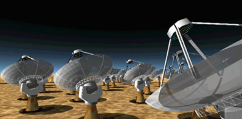

The SKA is an acronym for the proposed Square Kilometre Array telescope, and international effort to build a radio telescope with a collecting area of one square kilometre. Almost certain to be constructed from many small dishes and have the signals interferometrically combined, the SKA is proposed to be sited either in South Africa or Australia. The sensitivity of the SKA will be 2-3 orders of magnitude better than most existing telescopes and have VLBI resolutions. It will probably operate at wavelengths below a few cm and aims to detect neutral hydrogen from galaxies at large redshifts.

Artist’s impression of a Square Kilometre Array substation.
Credit: Chris Fluke, Swinburne University of Technology
Credit: Chris Fluke, Swinburne University of Technology
It is hoped that the SKA will be constructed between about 2013 and 2020.
For the latest information see: http://www.skatelescope.org/